현행 지금 화면(비교 기준)단색 + 로고 → 0.3초 만에 걷힘
▶ 직접 재생해 보기 — 지금 화면과 세 시안을 동시에
위 막대에서 콘텐츠 종류와 로딩 속도를 고르면 네 화면이 같은 시각에 함께 다시 재생돼. 「느림」은 preview(첫 저해상 화면)가 2.0초에, 고해상 타일이 4.2초에 도착하는 상황이야. 몇 번 반복해서 보면 차이가 잘 보여.
A1 가장자리가 사라지는 은은한 사진Vignette Mist
A2 강하게 흐린 색감 막Deep Blur Veil
A3 꿈결처럼 천천히 움직이는 사진Dream Drift
⚠️ 시안의 «VR 화면» 부분은 실제 krpano 뷰어가 아니라, 그 장소의 파노라마 미리보기 사진을 흐릿한 상태에서 선명하게 바꿔서 흉내 낸 거야. 그래서 배경·전환 «느낌»을 비교하는 용도로 봐 줘. 실제 뷰어에 넣으면 체감이 조금 다를 수 있어. 「현행」 칸도 지금 동작을 같은 방식으로 흉내 낸 근사치야.
한눈에 비교
| 안 | 배경 표현 | VR로 넘어가는 전환 | ③ 이미지가 없을 때 | 장점 | 단점 |
|---|---|---|---|---|---|
| A1 Vignette Mist 디자이너 추천(기본안) | 사진을 38% 밝기로 깔고, 가운데만 보이고 가장자리는 어둠 속으로 사라지게 한다. | 배경 등장 0.7s → VR 0.6s 페이드 → 배경 0.9s 퇴장 | 사진 대신 파란빛이 은은하게 번지는 «빛웅덩이». | 무엇이 나올지 어렴풋이 보인다. 구현이 가장 단순하고 모바일 부담이 적다. | 사진이 움직이지 않아서 셋 중 가장 평범하다. |
| A2 Deep Blur Veil | 사진을 형체를 알아볼 수 없을 만큼 강하게 흐리게 해서 «색감»만 전달한다. | 배경 등장 0.8s → 초점이 맞춰지듯 1.0s → VR 0.8s 페이드 | 이미지 없는 파노라마의 작은 미리보기를 더 세게 흐려서 쓴다. | 흐린 배경이 초점이 맞듯 VR로 이어져서 «다른 그림으로 점프»하는 느낌이 가장 적다. | 무슨 장소인지 알아보기 어렵다. «썸네일을 보여 달라»는 요청에는 가장 약하다. |
| A3 Dream Drift | 사진을 살짝만 흐리고 빛 번짐을 더한 뒤, 14초에 걸쳐 아주 천천히 확대되며 흐르게 한다. 가장자리는 넓게 녹인다. | 배경 등장 1.2s → VR 1.3s 크로스페이드 | 파랑·보라 오로라가 천천히 흐른다. | «넷플릭스처럼 은은하게»·«꿈꾸듯»에 가장 가깝고 전환이 가장 부드럽다. | 전환이 가장 길어(1.3초) 느리게 느껴질 수 있다. 움직임과 빛 효과 때문에 저사양 휴대폰 부담이 크다. |
세 안에 공통으로 들어가는 것
- 0.5초 유예 — VR 미리보기가 0.5초 안에 도착하면 로딩 배경·로고를 아예 띄우지 않는다. 빠른 콘텐츠에서 로딩 화면이 «번쩍» 지나가는 걸 막으려는 장치야.
- 미리보기가 도착하면 로고는 사라지고, 화면 아래에 작은 「Loading...」 문구만 남았다가 고해상 타일이 다 받아지면 0.3초 만에 사라진다.
- 배경 이미지는 VR을 열 때 이미 받아 오는 데이터에 들어 있어서 새 API가 필요 없다(아래 «데이터 근거» 참고).
🔍 이미지를 누르면 크게 볼 수 있어. 💬 오른쪽 아래 「코멘트」 버튼을 켜고 원하는 안의 제목이나 이미지를 눌러 의견을 남겨줘.
A1 Vignette Mist — 가장자리가 사라지는 은은한 사진 디자이너 추천
👍 장점어둠 속에서 그 장소가 어렴풋이 보이다가 VR이 그 위로 겹쳐 떠오른다. CSS 마스크 한 장이라 구현이 쉽고 휴대폰에서도 가볍다.
👎 단점정지한 사진이라 A3만큼 «꿈결 같은» 느낌은 없다.
🔁 10월에 썸네일 배경을 뺐을 때와 다른 점 — 그때는 썸네일이 먼저 또렷하게 보였다가 VR이 갑자기 덮었어. A1은 사진을 38% 밝기로 누르고 가장자리를 완전히 녹여서 «사진이 먼저 보인다»가 아니라 «어둠 속에 어렴풋이» 보이게 했어.
로딩 중 화면 — ① 커스텀 이미지 · ② 기본 썸네일 · ③ 이미지 없음
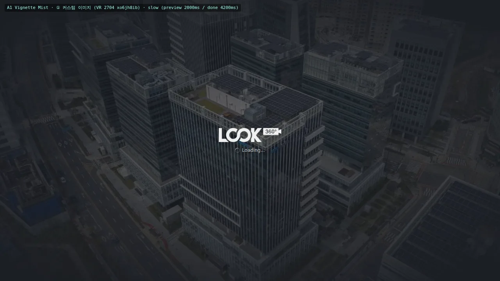
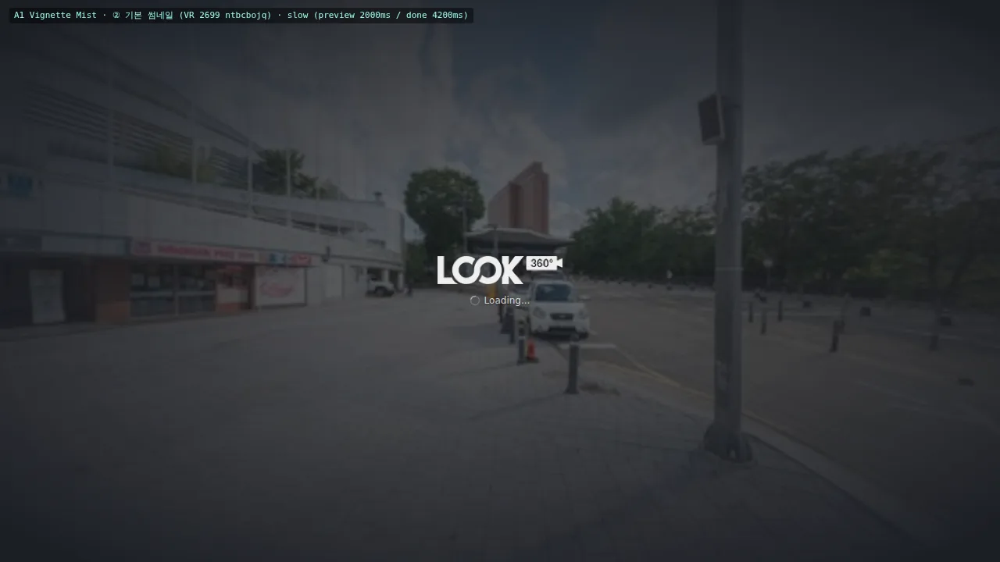
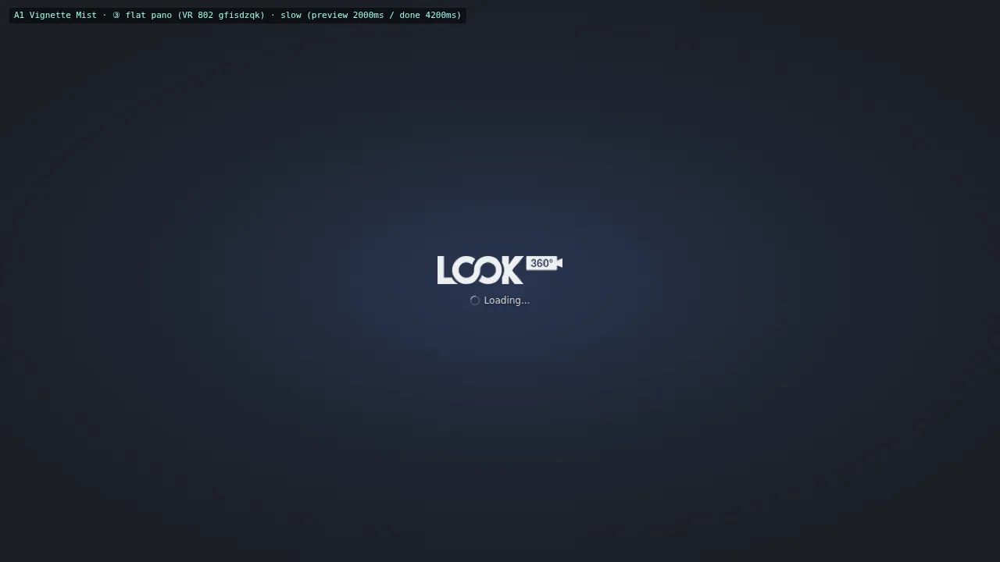
시간 순서로 본 전환 (세 경우 × 네 시점)
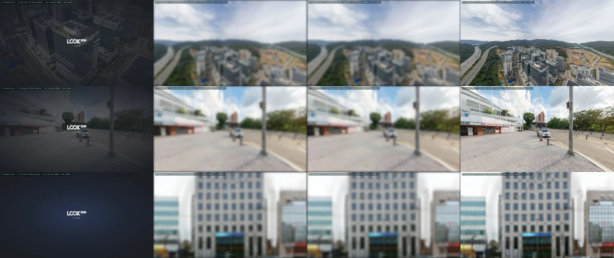
A2 Deep Blur Veil — 강하게 흐린 색감 막
👍 장점배경의 흐림이 점점 줄어들며 VR로 이어져서, 카메라 초점이 맞춰지는 것처럼 자연스럽다.
👎 단점너무 흐려서 무슨 장소인지 알아보기 어렵다. 색감만 남는다.
🔁 10월과 다른 점 — 형체를 알아볼 수 없을 만큼 흐리게 해서 «다른 그림이 먼저 보였다가 바뀐다»는 느낌 자체가 생기지 않게 했어.
로딩 중 화면 — ① 커스텀 이미지 · ② 기본 썸네일 · ③ 이미지 없음
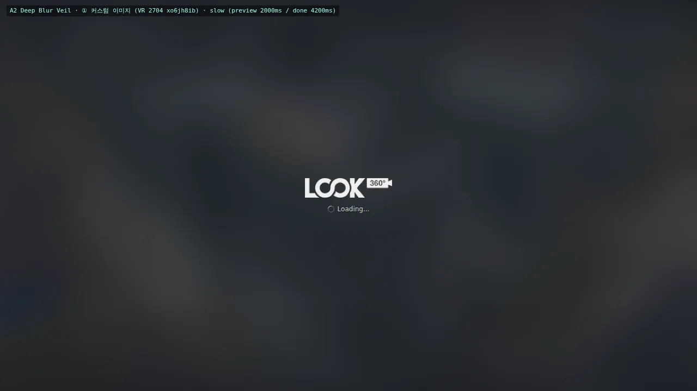
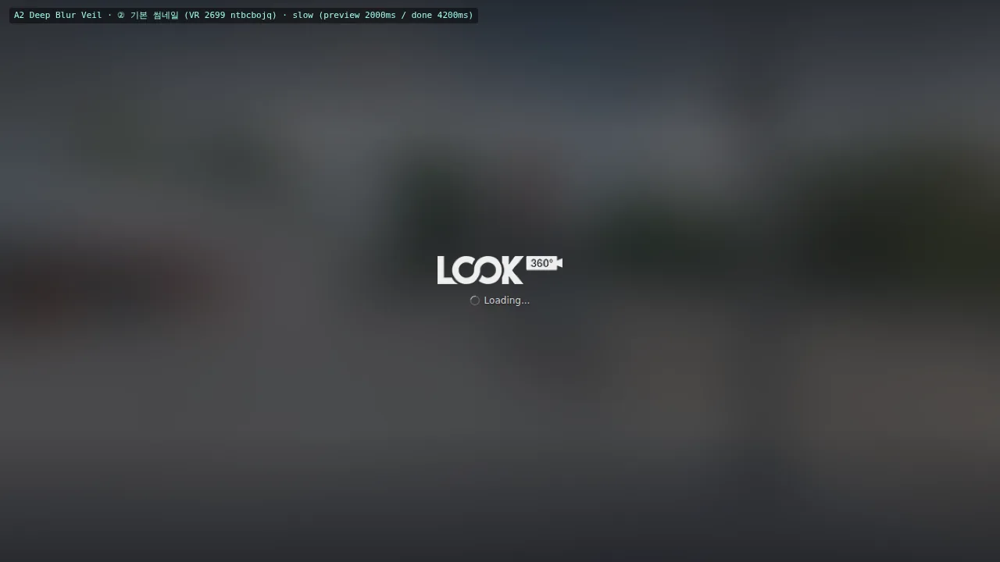
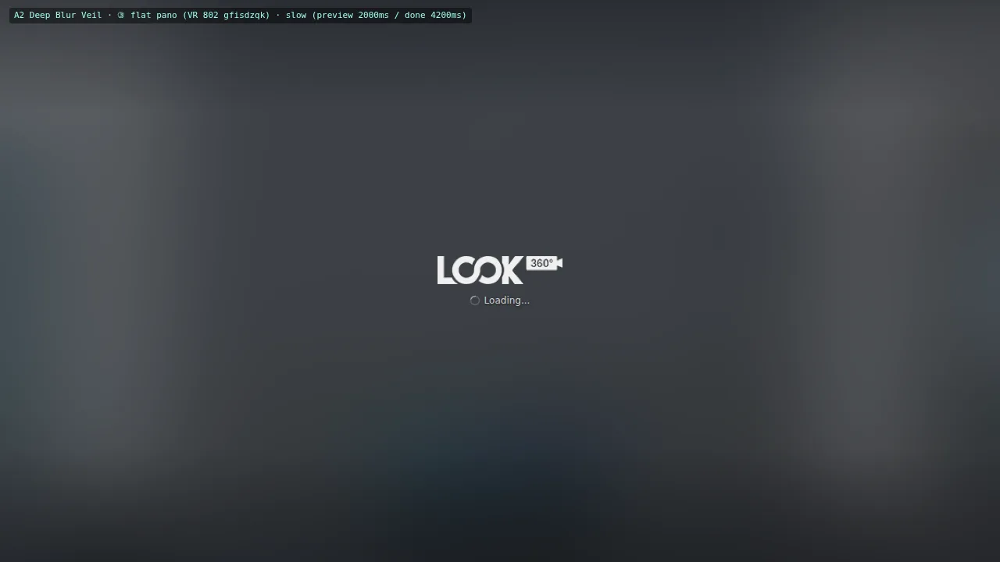
시간 순서로 본 전환
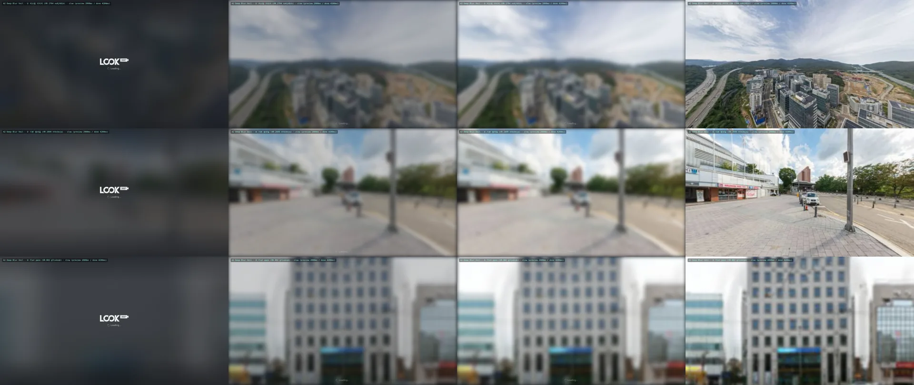
A3 Dream Drift — 꿈결처럼 천천히 움직이는 사진
👍 장점사진이 거의 그대로 보이면서도 천천히 흐르고 빛이 번져서 가장 «은은하고 꿈같은» 분위기가 난다. 전환도 가장 부드럽다.
👎 단점전환이 1.3초로 가장 길다. 움직임·빛 합성 때문에 저사양 휴대폰에서 버벅일 수 있어서, 구현할 때 «움직임 줄이기» 설정과 모바일용 단순화가 필요하다.
🔁 10월과 다른 점 — 사진을 30% 밝기로만 보이게 하고 계속 천천히 움직이게 해서 «사진이 떴다가 바뀐다»가 아니라 «꿈결처럼 흐르다가 VR로 녹아든다»로 바꿨어.
로딩 중 화면 — ① 커스텀 이미지 · ② 기본 썸네일 · ③ 이미지 없음
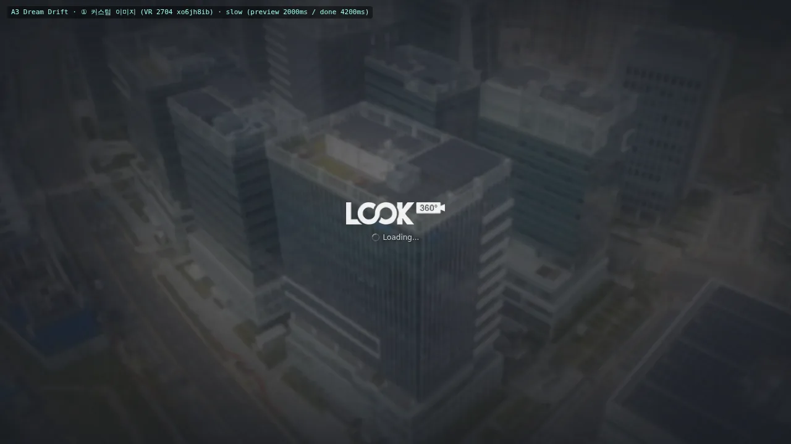
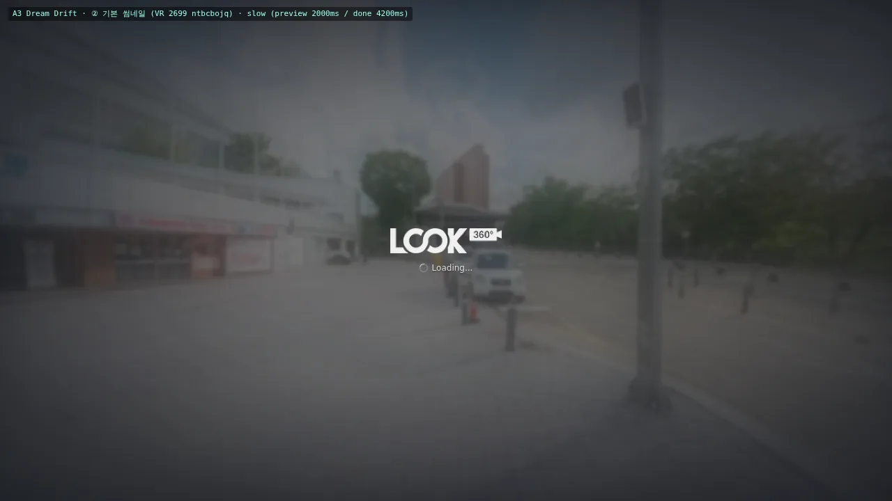
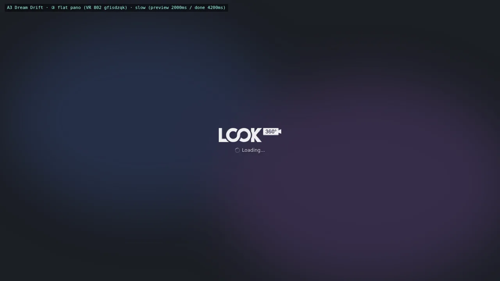
시간 순서로 본 전환
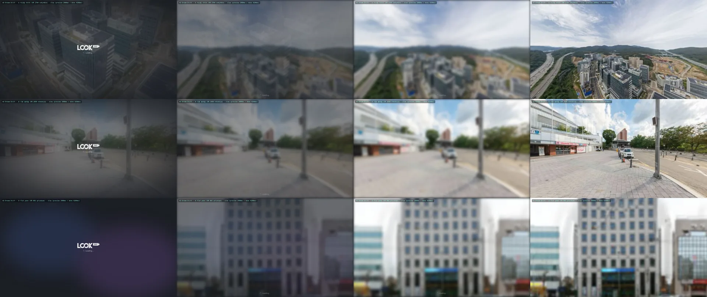
로딩이 빠를 때 화면이 깜빡이지 않나?
「로딩 화면은 가능한 안 보였으면」 하는 요청 때문에 따로 확인했어. 위 막대에서 「빠름」·「애매함」을 눌러 직접 볼 수도 있어.
| 상황 | 결과 (세 안 공통) |
|---|---|
| 빠름 — 미리보기 0.3초 도착 | ✅ 0.5초 유예 안에 도착해서 로딩 배경·로고가 한 번도 뜨지 않는다. 지금 화면에서 바로 VR이 페이드인된다. 깜빡임 없음. |
| 애매함 — 미리보기 0.65초 도착(가장 위험한 구간) | ✅ 배경이 20%쯤 떠오르다가 VR 페이드에 자연스럽게 묻힌다. «확 뜨는» 느낌은 없다. 다만 아래쪽 작은 「Loading...」 문구가 약 0.5초 보인다(원하면 이것도 숨길 수 있어). |
| 참고 — 유예를 0.35초로 줄였을 때 | 🔴 0.45초에 도착하는 경우 배경·로고가 0.1초 «번쩍» 했다. 그래서 유예는 0.5초 이상을 권장해. |
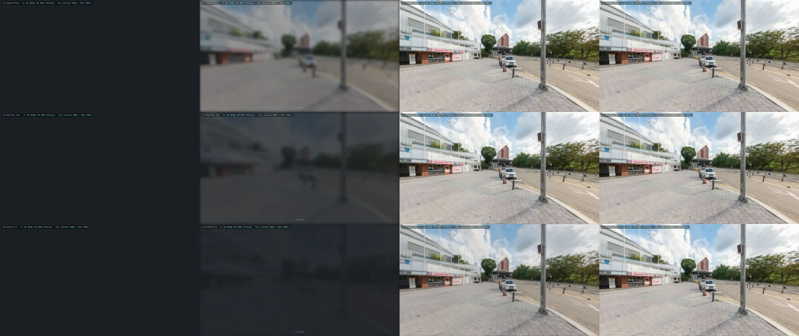
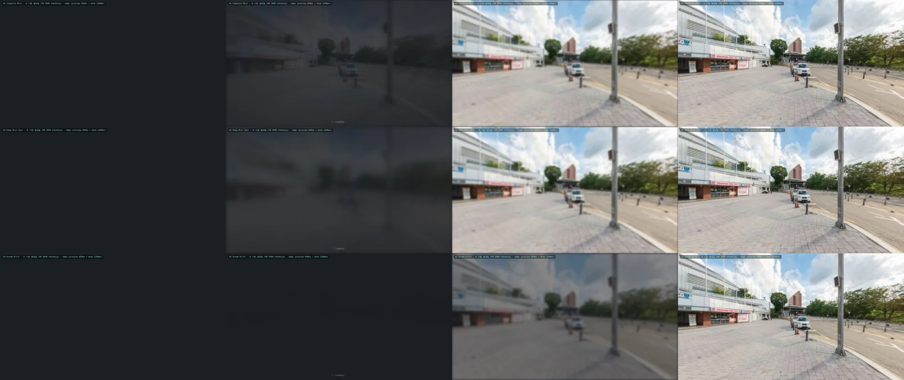
데이터 근거 — 콘텐츠를 세 종류로 나누는 기준
| 종류 | 판별 기준 | 규모 | 시안에 쓴 실제 콘텐츠 |
|---|---|---|---|
| ① 커스텀 이미지 있음 | 콘텐츠 대표 이미지(l3_vr_content.thumb_filename)가 등록돼 있음 — 판매자가 올렸거나 레거시에서 옮겨 온 커버 | VR스토리 89 · 360VIEW 39 | 경희판교VI캠퍼스 (uid 2704 · xo6jh8ib) |
| ② 기본 썸네일만 | 대표 이미지가 없고, 첫 장면 파노라마의 자동 미리보기(view_500.jpg)만 있음 | 360VIEW 약 2,150 — 가장 흔한 경우 | 서울신라호텔 (uid 2699 · ntbcbojq) |
| ③ 쓸 만한 이미지 없음 | 평면(flat) 파노라마처럼 250px 작은 미리보기만 있고 500px 미리보기가 없음(404) | flat 파노라마 294개 | Flat 파노라마 테스트 (uid 802 · gfisdzqk) |
이 값들은 VR을 열 때 이미 받는 GET /v1.0/vr/{domain} 응답에 들어 있어서, 구현할 때 새 API는 필요 없어. 「로딩 이미지」를 따로 지정하는 설정은 지금 플랫폼에도, 레거시 DB 이관 테이블에도 없었어. 시안 제작 중 실제 콘텐츠 조회수는 바뀌지 않았어(0건).
결정할 것
- 어느 안으로 갈지 — A1 · A2 · A3 중 하나, 또는 «A1 + A3의 느린 움직임»처럼 조합.
디자이너 의견: 기본 안전선은 A1이고, «넷플릭스처럼 은은하게»에 가장 가까운 건 A1 또는 A3야. A2는 썸네일을 보여 준다는 요구에는 약해. - 0.5초 유예를 그대로 둘지 (빠른 콘텐츠에서는 로딩 화면이 아예 안 보임).
- 미리보기가 뜬 뒤 화면 아래에 남는 작은 「Loading...」 문구를 남길지 숨길지.
고른 안은 일반 VR과 VR 스토리 로딩 화면 양쪽에 같이 적용하는 걸로 상위 작업(IND-9815)에 잡혀 있어. 선택 카드는 IND-9836 에 올라가 있어.